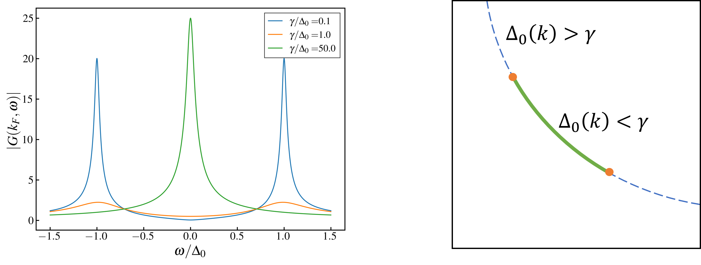

Phase Fluctuations in Two-Dimensional Superconductors and Pseudogap Phenomenon
Yang Qi
Department of Physics, Fudan University
QMBC, Fuzhou 2023.
www.spinon.science/pseudogap/pseudogap-20min.html
Collaborators and References
- Xu-Cheng Wang (王勖成), Fudan University.
- Prof. Xiao-Yan Xu (许霄琰), Shanghai Jiao Tong University.
Outline
- Motivation: Superconductivity, Gap and Pseudogap.
- Theory: 2D Superconductor with Fluctuating Pairing Order Parameters.
- Numerics: Determinant Quantum Monte Carlo (DQMC) simulation.
I. Motivation
Superconductivity, Gap and Pseudogap.
Superconductivity: Cooper pairs.
- Electrons form Cooper pairs
- Quasiparticle gap.
- Superconductivity: Bose condensation of Cooper pairs.
- Order parameter:
$\Delta = -V\langle c_{k\uparrow}c_{-k\downarrow}-c_{k\downarrow}c_{-k\uparrow}\rangle.
=\Delta_0e^{i\theta}$
- Quasiparticle gap: $\Delta_0$
- Phase coherence: $\theta(r)=\theta_0$.
Mean-Field Behavior
- BCS Theory is a Mean-Field Theory.
- $\Delta(\vec r)=\Delta$ is constant.
- $T>T_c$: single quasiparticle peak at $\omega=0$.
- $T\lt T_c$: gap opens, quasiparticle peaks at $\omega=\pm\Delta$.
Fluctuations beyond MFT?
- Beyond MFT: $\Delta = \Delta(\vec r).$
- MFT is only correct in $d\geq4$?
- $3d$: BCS theory (MFT) is usually good enough.
- $2d$: Quasi-LRO and BKT transition, fluctuation cannot be ignored.
SC Fluctuation and Pseudogap
- No phase coherence: no SC.
- Locally $\Delta\neq0$: qp gap.
- Spectrum broadening:
$\delta x\sim\xi\Rightarrow\delta k\sim\xi^{-1}$
$\Rightarrow \delta\omega\sim v_F\delta k\sim v_F/\xi.$
- Pseudogap: gap above $T_c=T_{\text{BKT}}$.
- PG has been observed in DQMC.
Similar Previous Works
- Coupling b/w quasiparticles and supercurrents: Franz and Millis, PRB 58 14572 (1998).
- Effective theory of fluctuating SC order parameters: Kwon and Dorsey, PRB 59, 6438 (1999);
Banerjee, Ramakrishnan and Dasgupta, PRB 84, 144525 (2011).
- Our theory is simpler: only classical (spatial) fluctuation is enough.
- With DQMC simulations.
II. Theory
2D Superconductor with Fluctuating Pairing Order Parameters.
Classical Fluctuation Only
- Finite-temperature phenomenon: classical effective theory for $T\gtrsim T_{BKT}$.
- Thermodynamic limit: space-time is effective 2D.
- $\xi\gg\beta\ge\tau$: ignore temporal correlations.
- $\Delta(\vec r, t)\rightarrow\Delta(\vec r)$.
Model
- Hamiltonian:
$$H=\sum_k(\epsilon_k-\mu)c_{k\alpha}^\dagger c_{k\alpha} + \int d^2r \left[\Delta(\vec r)\psi_\uparrow(\vec r)\psi_\downarrow(\vec r)+\text{h.c.}\right]$$
- Classical distribution:
$\overline{\Delta(\vec r)}=0;$
$\overline{\Delta(\vec r)^\ast\Delta(\vec r')}
=\Delta^2_0\ e^{-\frac{|r-r^\prime|^2}{2\xi^2}}.$
- Fixing $\Delta(\vec r)$: free-fermion problem. $\Delta_0$ as a small parameter.
- Averaging over $\Delta(\vec r)$: Disorder averaging.
Theoretical Results
- BCS theory: $\Sigma(k, \omega)=\frac{\Delta_0^2}{\omega+\xi_k+i0^+}, \xi_k=\epsilon_k-\mu$
- Electron self-energy: $\Sigma(k, \omega) = \frac{\Delta_0^2}{\omega+\xi_k+2i\gamma}.$
- Broadening: $\gamma=\frac{v_F}{2\xi}.$
- $G(k,\omega)=\frac{\omega+\xi_k+2i\gamma}{\omega^2-E_k^2+2i\gamma(\omega-\xi_k)}$, $E_k=\sqrt{\xi_k^2+\Delta_0^2}$.
- On the FS: $G(k,\omega)=\frac{\omega+2i\gamma}{\omega^2-\Delta_0^2+2i\gamma\omega}.$
- Quasiparticle pole: $\omega=\pm\sqrt{\Delta_0^2-\gamma^2}-2i\gamma$.
- When $\gamma\ll\Delta_0$, the broadening $\frac{\gamma}{\Delta_0}\propto\frac{\xi_{\text{BCS}}}{\xi}$.
d-Wave Pairing: Fermi arc
- d-wave: $\Delta_0(k)=\Delta_0(\cos k_x-\cos k_y).$
- Same theory, replace $\Delta_0$ by $\Delta_0(k)$.
- QP poles: $\omega=\pm\sqrt{\Delta_0(k)^2-\gamma^2}-2i\gamma$
- $\gamma \lt \Delta_0(k)$: two peaks at $\omega=\pm\sqrt{\Delta_0(k)^2-\gamma^2}$
- $\gamma \gt \Delta_0(k)$: one peak at $\omega=0$.

IV. Numerics
Determinant Quantum Monte Carlo (DQMC) on attractive-$U$ Hubbard Model
Attractive-$U$ Hubbard Model
- $H=-t\sum_{\langle ij\rangle}\left(c_{i\alpha}^\dagger c_{j\alpha}+\text{h.c.}\right)
-U\sum_in_{i\uparrow}n_{i\downarrow}.$
- Sign-problem free even at finite doping.
- Strong s-wave superconductivity (at finite doping).
- Extensively studied by Determinant Quantum Monte Carlo (DQMC).
Superconductivity: BKT transition
- Quasi-LRO and BKT transition:
- Finite-size scaling:
- Define correlation function:
$P_S=\left\langle\hat\Delta^\dagger \hat\Delta\right\rangle$,
$\hat\Delta=\frac1{\sqrt N}\sum_ic_{i\uparrow}c_{i\downarrow}$.
- Data collapsing: $P_SL^{\eta-2}=f(\xi/L)$.
- Essential singularity: $\xi\propto e^{at^{-\frac12}}$, where $t=(T-T_c)/T_c$.
- Determines $T_c$ and $\xi(T)$.
Spectral function
- Analytic continuation: $G(\tau)\Rightarrow G(\omega_n)\Rightarrow G^R(\omega)?$
- SAC method: Sandvik, Phys. Rev. B 57, 10287 (1998).
Comparison with theoretical results
- Theory: $\Delta\omega=\frac{v_F}{2\xi}$.
- Fitting: $\Delta\omega=\frac{v_F}2\left(\xi^{-1}+\xi_0^{-1}\right)$.
- $\xi_0$: broadening due to other correlated effects.
d-wave Superconductor: Model
- X. Y. Xu and T. Grover,
PRL 126, 217002 (2021).
- Designed model: $H=H_t+H_U+H_V+H_{XY}$.
- $H_t+H_U$: Hubbard model;
- $H_V=V\sum_{\langle ij\rangle}\tau_{ij}e^{i\theta_{ij}}\left(c_{i\uparrow}^\dagger c_{j\downarrow}^\dagger - c_{i\downarrow}^\dagger c_{j\uparrow}^\dagger\right)+\text{h.c.}$
- $H_{XY}$: XY model for $\theta_{ij}$.
- No sign problem.
- d-wave ground state.
DQMC simulations: Electron spectrum
Fermi arcs at finite temperatures.
Conclusions
- 2D Superconductors: (classical) fluctuations above $T_{\text{BKT}}$.
- Classical fluctuations $\Rightarrow$ pseudogap behavior.
- Classical fluctuations + nodal gap function $\Rightarrow$ Fermi arcs.
- Ubiquitous in 2D superconductors.
- In high-$T_c$ cuprate superconductors:
- Lower pseudogap associated w/ SC fluctuations.
- Upper pseudogap $T^\ast$?
S I Vedeneev 2021 Phys.-Usp. 64 890